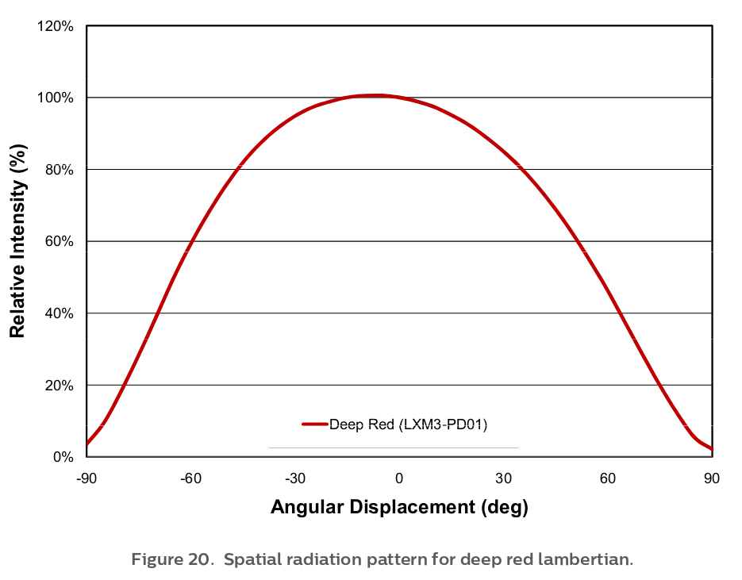
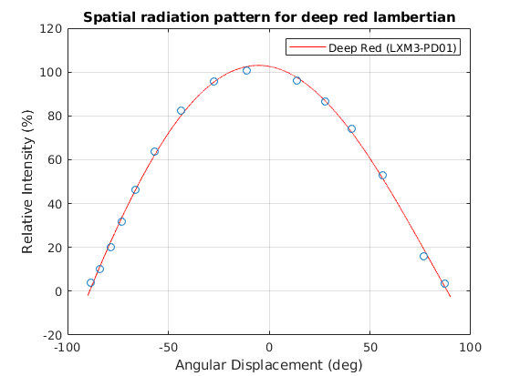

1. laboratorijas darbs
Contents
Mērījumu datu apstrāde
Darba merķi:
- iemācīties apstrādāt mērījumu datus,
- iemācīties veidot atskaites izmantojot report generator,
- iemācīties nolasīt datus no grafika.
Dots sekojošais grafiks:

B = imread('Grafiks_Cropped.png'); figure(1),image([-90,90],[120,0],B); set(gca,'YDir', 'normal'); [x,y] = ginput(15); figure(1), close; tx=-90:0.01:90; C = polyfit(x,y,4); RelIntY = polyval(C,tx); figure(2),plot(tx, RelIntY,'-r',x,y,"o") title('Spatial radiation pattern for deep red lambertian') xlabel('Angular Displacement (deg)') ylabel('Relative Intensity (%)') legend('Deep Red (LXM3-PD01)') grid;
Polinoma koeficienti
C
C =
0.0000 0.0000 -0.0152 -0.1643 102.5702
Secinājumi:
- Iemācījos nolasīt grafiku no attēla ar "imread()" funkciju, nolasīt mērījumus ar "ginput()" funkciju, un zīmēt grafiku izmantojot papildfunkcijas "polifit()", "polyval()", "plot()" un citus;
- Kā arī iemācījos pielikt aprakstus asīm un virsrakstu grafikam;